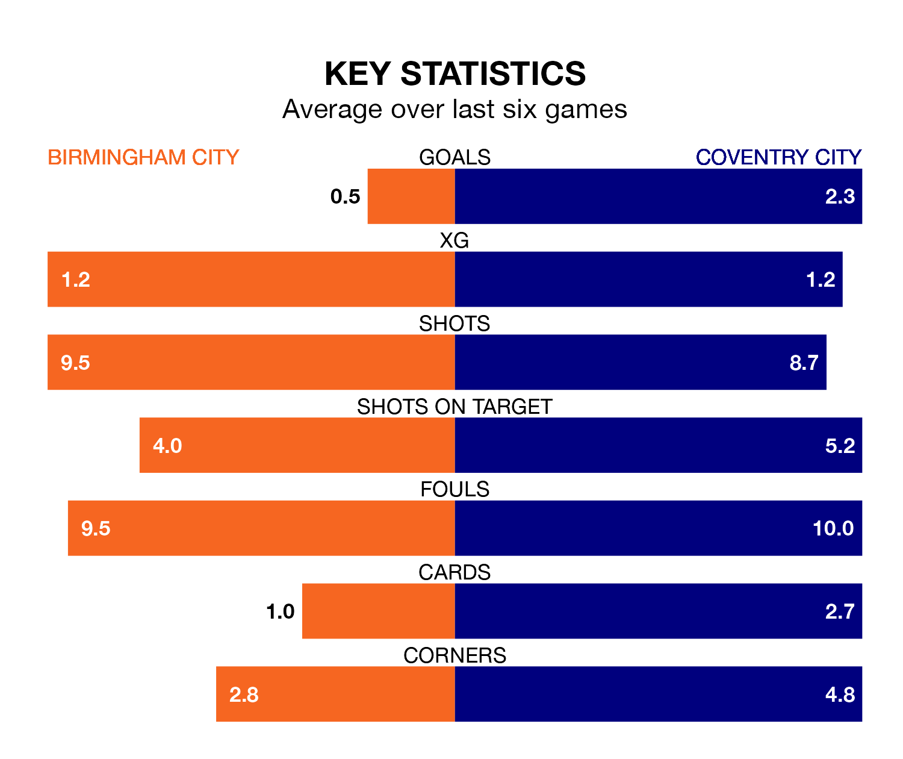

Birmingham City are on a poor run ahead of hosting Coventry City at St Andrew's on Saturday, with just three points collected from their last six games.
The Blues have picked up just one win in their last six EFL Championship games, and face a Sky Blues side whose last six games have brought four wins and two losses.
Birmingham are 23rd in the table after 42 games, of which they have won 11 and drawn nine, earning 42 points.
Coventry are 16 places ahead of Birmingham City in seventh, with 17 wins and 12 draws putting them on 63 points.
With 45 goals in 42 games so far this season, the Blues are scoring at below the league average rate with 1.1 goals per game. And they are conceding more than average, letting in 64 goals at a rate of 1.5 per game.
Coventry City, meanwhile, are above average scorers, with 1.6 goals per game, compared to a league average of 1.3. They have conceded 1.2 goals per game.
In the last 10 years, Birmingham and Coventry have played each other on nine occasions. Coventry won three of them and they drew six times.
On average, the Blues scored 0.6 goals and the Sky Blues 1.2 in those matches.
Their last meeting was on December 8, when Coventry won 2-0 at home.
In Haji Wright, the Sky Blues have one of the league's most on-form strikers so far this season. He has notched 15 goals in 39 appearances, to sit fifth in the scoring charts.
His goal rate of one every 171 minutes is quicker than that of Jay Stansfield, the hosts' top scorer with a goal every 274 minutes, and a total of 11 goals in 39 games.
Birmingham's last match was on Wednesday, a 1-0 loss against Cardiff City.
Coventry lost 2-1 against Southampton last time out, on Tuesday, with Jake Bidwell on the scoresheet.
Saturday's match will be refereed by Darren Bond, who has taken charge of 11 EFL Championship games so far this season, issuing one red card and booking 44 players. He has awarded four penalties.
The last Birmingham game Bond refereed was a 1-0 away loss to Millwall on March 9. His last Coventry match was their 2-1 loss away at Leicester City on August 6.
Updated: 10:01 (UTC), 12/04/24